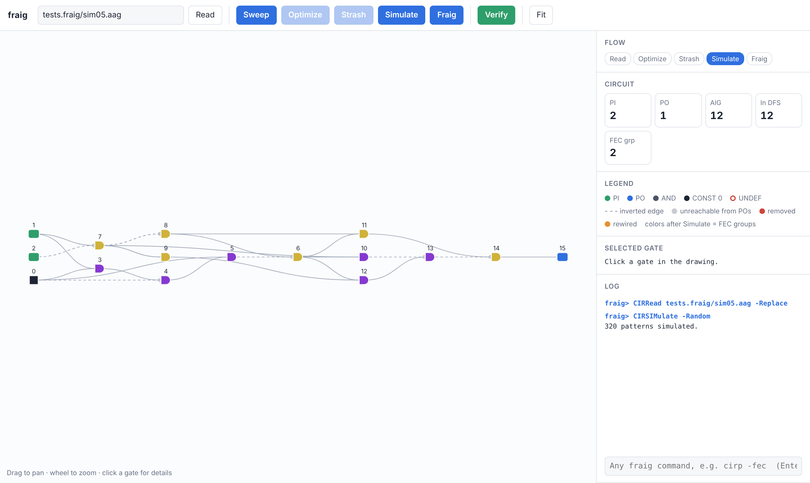
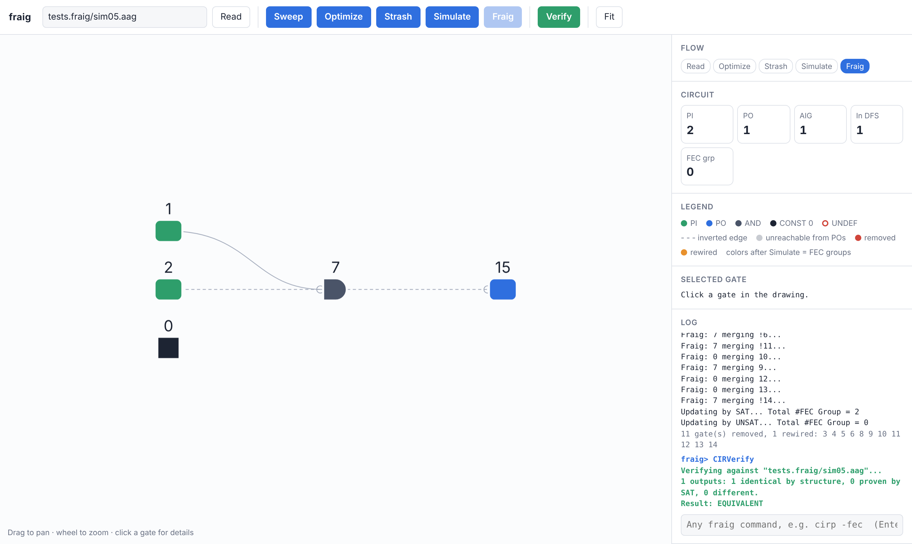
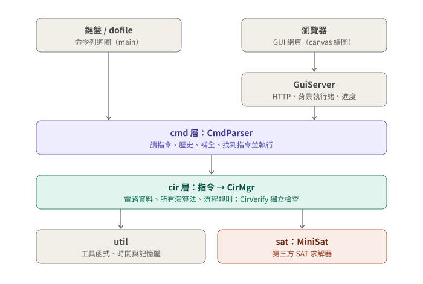
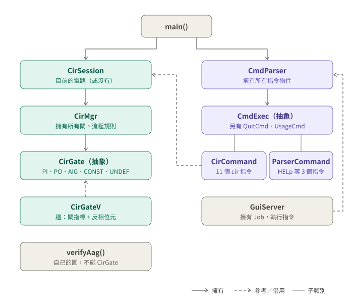
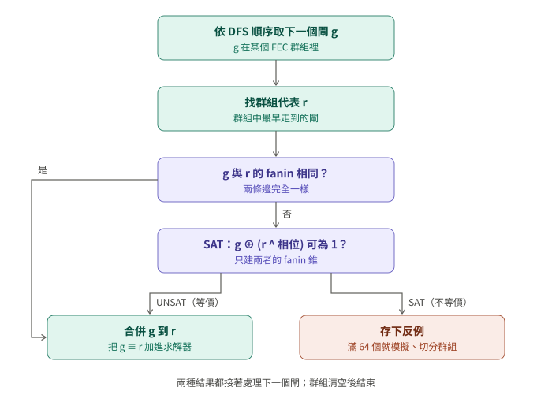

數位電路設計流程中，電路會經過許多次自動轉換（合成、技術映射、插入測試電路等）。每次轉換都可能留下多餘的邏輯： 沒有接到任何輸出的閘、可以被常數化簡的閘、結構不同但功能完全相同的閘。把這些多餘的邏輯找出來並移除， 可以讓電路變小，也讓後續的驗證工具跑得更快。
本專題實作一個這樣的工具：讀入一個組合邏輯電路，在不改變功能的前提下把它化簡， 並且能夠自己證明化簡後的電路和原電路對所有輸入都有相同的輸出。 「功能相同」的判斷是整個專題的核心難題：兩個閘的功能是否相同，等價於問「是否存在一組輸入讓它們的輸出不同」， 這是一個布林可滿足性（SAT）問題，屬於 NP-complete。實作的重點因此是：用便宜的方法（結構比對、平行模擬） 處理掉絕大多數的情況，只把真正需要的問題交給 SAT 求解器，並且讓每個 SAT 問題盡量小。
任何組合邏輯都可以只用「兩輸入 AND 閘」和「反相器」表示，這種表示法稱為 AIG（And-Inverter Graph）。 在 AIG 中，節點有四種：主要輸入（PI）、主要輸出（PO）、AND 閘、常數 0；每條邊可以帶一個反相標記。 因為只有一種邏輯閘，所有演算法都只需要處理一種情況，這是 AIG 在邏輯合成與驗證工具中被廣泛使用的原因。
AIGER 是 AIG 的標準檔案格式。本專題讀寫 ASCII 版（.aag）：
aag 7 2 0 2 3 ← M I L O A：最大變數編號、輸入數、latch 數、輸出數、AND 閘數
2 ← 輸入：變數 1
4 ← 輸入：變數 2
12 ← 輸出：變數 6
15 ← 輸出：變數 7 的反相
6 2 4 ← AND：變數 3 = 變數 1 AND 變數 2
12 6 3 ← AND：變數 6 = 變數 3 AND (NOT 變數 1)
14 4 7 ← AND：變數 7 = 變數 2 AND (NOT 變數 3)
i0 a ← 符號表：輸入與輸出的名字（可選）
c ← 註解開始
literal 2v 代表變數 v，2v+1 代表它的反相；literal 0 和 1 是常數 0 和 1。
本專題只處理組合電路（L = 0）。檔案中可能出現「被引用但沒有定義」的變數（UNDEF），
也可能有「定義了但沒有被任何人使用」的閘，兩者都要被正確處理和報告。
FRAIG（Functionally Reduced AIG）是指「沒有任何兩個節點功能相同」的 AIG。從一般的 AIG 得到 FRAIG 的流程如下：
| 步驟 | 做什麼 | 怎麼判斷 |
|---|---|---|
| Sweep | 移除走不到任何 PO 的閘 | 從 PO 出發的可達性 |
| Optimize | 常數傳播與簡單化簡：a&0=0、a&1=a、a&a=a、a&!a=0 | 只看兩個 fanin |
| Strash | 兩個 AND 閘的 fanin 完全相同就合併 | 結構雜湊 |
| Simulate | 對大量輸入樣本求值，把「到目前為止輸出都相同或都相反」的閘分成同一組，稱為 FEC 群組（functionally equivalent candidates） | 64 位元平行模擬 |
| Fraig | 對 FEC 群組裡的每一對閘問 SAT：證明等價就合併；不等價就得到一組反例輸入，拿去模擬，把群組切細 | SAT 求解器（MiniSat） |
前三步是純結構的、便宜的化簡；後兩步處理「結構不同但功能相同」的情況。模擬只能說「可能等價」 （因為只試了有限多組輸入），能說「一定不等價」；SAT 才能說「一定等價」。兩者互補：模擬先把明顯不同的閘分開， SAT 只需要處理剩下的候選。
專題規格定義了一組指令（第 2 章）以及它們的輸出格式和錯誤訊息，報告類指令的輸出要和課程提供的參考程式逐字相同。 規格也規定了指令之間的順序限制（流程規則）：
違反時印出規格指定的錯誤訊息，電路不變。這些規則集中在 CirMgr::whyNot()（6.9 節）。
fraig 的結果不是唯一的：合併的順序、模擬用的隨機樣本都會影響最後的電路。因此 fraig 之後的電路無法和參考程式逐字比較，
正確性必須用「和原電路功能等價」來檢查，這是本專題另外實作獨立等價檢查器 CIRVerify 的原因（6.8 節）。
CIRVerify 自己重新解析檔案、建自己的圖，用結構雜湊、模擬和 SAT sweeping
證明目前電路與原檔等價，不等價時給出經過重新模擬確認的反例。它不共用化簡用的任何程式碼。CIRVerify 證明等價。unique_ptr 擁有、裸指標借用）、沒有全域變數、
CMake 建置、92 個自動測試、GitHub Actions 以 g++、clang++ 與 sanitizer 版本持續整合，零編譯警告。cmake -S . -B build -G Ninja
cmake --build build # 產生 build/fraig
ctest --test-dir build -j4 # 92 個自動測試需要 C++17 編譯器（g++ 9+ 或 clang++ 10+）與 CMake 3.16+。單元測試使用的 GoogleTest 在設定時以 git 取得，
離線時可加 -DFRAIG_UNIT_TESTS=OFF。-DFRAIG_SANITIZE=ON 建出 AddressSanitizer + UBSan 版本，
-DFRAIG_WERROR=ON 把警告當錯誤。
build/fraig # 互動模式（Tab 補全、上下鍵歷史）
build/fraig -File run.dofile # 執行指令腳本| 指令 | 作用 |
|---|---|
CIRRead <file> [-Replace] | 讀入電路 |
CIRPrint [-Summary|-Netlist|-PI|-PO|-FLoating|-FECpairs] | 統計、網表、輸入輸出、浮接與未使用的閘、FEC 群組 |
CIRGate <id> [-FANIn|-FANOut <level>] | 單一閘的資訊、模擬值、FEC 夥伴、fanin／fanout 樹 |
CIRSWeep、CIROPTimize、CIRSTRash | 結構化簡 |
CIRSIMulate -Random|-File <f> [-Output <log>] | 隨機或檔案樣本模擬，建立 FEC 群組 |
CIRFraig | 以 SAT 證明並合併 FEC 群組 |
CIRWrite [<id>] [-Output <f>] | 輸出 AIGER（整個電路或某個閘的 fanin 錐） |
CIRVerify [-File <f>] | 證明目前電路和原檔（或指定檔案）等價 |
CIRJson | 以 JSON 輸出電路（GUI 使用） |
HELp、HIStory、DOfile、USAGE、Quit | 一般指令 |
指令不分大小寫，大寫部分是可縮寫到的最短形式。一個典型的流程：
fraig> cirr tests.fraig/sim07.aag
fraig> cirsim -r
fraig> cirfraig
fraig> cirsw
fraig> ciropt
fraig> cirv
Verifying against "tests.fraig/sim07.aag"...
195 outputs: 10 identical by structure, 185 proven by SAT, 0 different.
Result: EQUIVALENTbuild/fraig -Gui [port] 啟動本機 HTTP 伺服器（只接受 127.0.0.1），在瀏覽器開 http://localhost:8080。
左側選檔案、按指令按鈕；中間是電路圖；右側是統計與指令紀錄。



程式分成五層，每一層只依賴它下面的層：
| 層 | 目錄 | 責任 |
|---|---|---|
| 前端 | src/main/ | main() 建立所有物件；命令列迴圈；GuiServer 與內嵌網頁 |
| cmd | src/cmd/ | 通用的指令框架：讀一行、找到指令、執行；歷史、補全、dofile。完全不知道電路的存在 |
| cir | src/cir/ | 電路相關的指令與所有演算法；獨立的等價檢查器 |
| util | src/util/ | 字串處理、量時間與記憶體等小工具 |
| sat | src/sat/ | MiniSat（第三方程式碼，不修改） |
這個方向讓 cmd 層可以原封不動地用在別的專案；新增一個電路指令只需要在 cir 層寫一個類別並在 main() 註冊。
CIRSTRash），
走和鍵盤輸入完全相同的 CmdParser；GUI 需要的電路資料由 CIRJson 指令以 JSON 提供。
因此 CLI 和 GUI 的行為不可能不一致，GUI 也不需要知道 CirMgr 的內部結構。
CmdParser 從鍵盤、dofile 或 GUI 取得一行文字，以第一個字查指令表（支援縮寫）。CmdExec 物件，呼叫它的 exec(選項字串)。CirCommand 的子類別）解析選項、檢查有沒有電路、問 CirMgr::whyNot() 流程上能不能做，
能做就呼叫 CirMgr 的對應方法，不能做就印出錯誤訊息。CirMgr 執行演算法、更新電路與「上一步」紀錄。src/cir/ cirMgr（電路與讀寫）、cirGate（閘）、cirCmd（指令）、cirOpt（sweep / optimize 與基本操作）、
cirSim（模擬與 FEC）、cirFraig（strash / fraig）、cirVerify（等價檢查）、cirCheck（一致性檢查）、cirJson
src/cmd/ CmdParser、CmdExec、一般指令
src/main/ main()、guiServer、guiPage.h（內嵌網頁）
src/util/ 工具函式、MyUsage
src/sat/ MiniSat
tests/ cases.txt 與黃金輸出、unit/（GoogleTest）、隨機電路與模糊測試工具
scripts/ 與參考程式比對、等價檢查、效能量測
docs/ 本報告、設計文件、效能紀錄
| 類別 | 責任 | 擁有／借用 |
|---|---|---|
CirSession | 「目前的電路」，可能沒有（讀檔前或讀檔失敗） | 擁有 unique_ptr<CirMgr>；由 main() 持有 |
CirMgr | 一個電路：讀寫 AIGER、sweep／optimize／strash、模擬、FEC 群組、fraig、報告、流程規則、一致性檢查 | 擁有所有閘 |
CirMgr::AagLexer | 讀一個檔案時的 parser 狀態（目前行號、欄位、錯誤訊息） | 讀檔函式的區域變數 |
CirGate | 閘的抽象基底：ID、行號、型別、模擬值、FEC 編號、SAT 變數、走訪標記 | 被 CirMgr 擁有 |
CirPiGate、CirPoGate、CirAigGate、CirConstGate、CirUndefGate | 五種閘；PO 有一個 fanin，AIG 有兩個，PI／PO 有名字 | 同上 |
CirGateV | 一條邊：閘指標 + 反相位元，8 bytes | 借用閘 |
CmdParser | 指令註冊表、讀指令、dofile 堆疊、歷史 | 擁有所有指令物件；由 main() 持有 |
CmdExec | 指令的抽象介面：exec、usage、help | — |
CirCommand | 電路指令的基底，存 CirSession&；11 個子類別（CirRead、CirPrint……CirVerify、CirJson） | 借用 session |
ParserCommand | 需要操作 parser 的指令基底，存 CmdParser&；子類別 Help、History、Dofile | 借用 parser |
UsageCmd、QuitCmd | 量時間／記憶體；離開 | UsageCmd 擁有 MyUsage |
GuiServer | HTTP 伺服器、背景工作執行緒、工作紀錄與進度 | 擁有 Job，借用 CmdParser |
AagFile、Graph、Simulator、SatSweeper | CIRVerify 自己的解析器、結構雜湊圖、模擬器、SAT sweeping；只在 cirVerify.cpp 內可見 | verifyAag() 的區域物件 |
VerifyResult | 驗證結論、各類輸出的計數、反例 | 值 |
SatSolver | MiniSat 的包裝 | fraig 與 verify 各自建立區域物件 |
整個專案（MiniSat 除外）遵守一條規則：std::unique_ptr 代表擁有，裸指標或參考代表借用。
程式中沒有手寫的 new 和 delete，也沒有全域變數。
main() 以區域變數持有 CirSession 與 CmdParser，它們的壽命就是程式的壽命；
指令物件在建構時拿到它們的參考。原本課程程式碼用的全域 cirMgr 因此不存在，每個函式需要什麼都從參數或成員取得。CirMgr::_gates（vector<unique_ptr<CirGate>>）以 ID 為索引擁有每個閘；
_piList、_dfsList、fanin、fanout 清單裡的 CirGate* 全部是借用。std::move 從 _gates 轉到 _retired，
在指令結束重建清單時才一起釋放（6.2 節說明原因）。CirMgr 等類別不需要寫解構子、複製建構子（Rule of Zero）；
unique_ptr 不能複製，所以電路也不會被意外複製。enum class GateType : unsigned char，建構時存進基底的 _type。
判斷型別是一般的比較（不用 dynamic_cast），asAig() 在確定是 AND 閘時回傳 CirAigGate*。
處理任何閘的程式用 numFanins()／fanin(i)，不需要知道具體型別。CirGateV 只能從閘指標明確建構（explicit），沒有和整數之間的隱式轉換；
反相是值運算 ~e、e ^ inv；explicit operator bool 判斷是不是空邊。enum class CirStep 表示，whyNot() 回傳 std::optional<std::string_view>：
沒有值代表可以做，有值就是錯誤訊息。static_assert 固定：CirGateV 8 bytes、CirAigGate 64 bytes。
大電路有數十萬個閘，每個閘多 8 bytes 就是數 MB，所以成員的排列順序是刻意的。| 成員 | 意義 |
|---|---|
_id、_lineNo | 變數編號與檔案中的行號 |
_pValue | 64 位元模擬值：第 k 位是第 k 個樣本下的輸出 |
_fecId | 所屬 FEC 群組的編號 ×2 + 相位；不在群組裡時為特殊值 |
_type | GateType：PI、PO、AIG、CONST、UNDEF |
_satVar | 在 fraig 的 SAT 模型中的變數；尚未建立時為 kNoSatVar |
_ref | 走訪標記；和全域計數器比較，換一次走訪只要把計數器加一，不用逐一清除 |
_in0、_in1 | （AIG）兩條 fanin 邊；PO 只有 _in0 |
CirGateVclass CirGateV {
std::uintptr_t _bits = 0; // 閘指標 | 反相位元
static constexpr std::uintptr_t INV_BIT = 1;
public:
explicit CirGateV(CirGate* g, bool inv = false);
CirGate* gate() const { return reinterpret_cast<CirGate*>(_bits & ~INV_BIT); }
bool isInv() const { return _bits & INV_BIT; }
CirGateV operator~() const; // 同一個閘、相反的相位
};閘物件至少 2 bytes 對齊（以 static_assert(alignof(CirGate) >= 2) 保證），所以指標的最低位元一定是 0，
可以拿來存反相旗標。一條邊因此只佔一個指標的空間，而且「取閘」和「取相位」都是一個位元運算。
CirMgr| 成員 | 意義 | 何時更新 |
|---|---|---|
_gates[id] | 擁有每個閘；ID 直接索引，O(1) 查詢；[0] 是常數 0；被移除的位置為空 | 讀檔、移除閘 |
_piList、_poList | 輸入、輸出，依檔案順序 | 讀檔 |
_fanoutInfo[id] | 每個閘的 fanout 清單。一條邊一筆：同一個閘的兩個 fanin 都接到 X，X 的清單裡就有它兩次，搬移 fanout 時不需要特例 | 讀檔、合併閘 |
_dfsList | 從 PO 出發的 DFS 後序：每個閘的 fanin 都排在它前面 | 每個改電路的指令結束時 |
_undefList、_floatList、_unusedList | 由網表推導出的報告清單 | 同上 |
_fecGrps | FEC 群組（5.4 節） | 模擬、fraig |
_retired | 擁有已從網表移除、但還沒釋放的閘 | 合併／移除時加入，指令結束時清空 |
_lastStep | 上一個改電路的步驟，用於流程規則 | 每個指令 |
DFS 後序是幾乎所有演算法的基礎。依這個順序處理，走到某個閘時它的 fanin 都已經處理完、不會再改變， 所以 optimize、strash、模擬都只需要走一遍。
每個群組是一個 vector<unsigned>，存 閘 ID × 2 + 相位，依 ID 排序；相位是相對於組內第一個成員，
所以第一個成員一定是正相。例如群組 {6, 13, 20} 代表「閘 3、閘 6 的反相、閘 10」到目前為止的模擬值都相同。
每個閘的 _fecId 記錄所在群組的索引與相位，所以 CIRGate 能在 O(1) 找到自己的夥伴。
常數 0 也參加分組，和它同組的閘就是「可能是常數」的閘。
以下 n 是閘數，e 是邊數（約 2n）。
AagLexer 與兩階段連接讀檔分兩階段。第一階段由 AagLexer 逐行讀取，檢查格式（缺少空白、數字超出範圍、
literal 重複定義、輸入不能是常數等），建立閘物件，但 fanin 只以 literal 暫存在 PendingFanins，
因為一個閘的 fanin 可能定義在檔案的後面。任何錯誤都印出規格指定的訊息與行號、欄號，並放棄這個檔案。
第二階段 connectFanins() 在所有閘都建好之後，依 ID 順序把 literal 轉成 CirGateV，
同時建立 fanout 清單；引用到不存在的變數時建立 UNDEF 閘。最後建立 DFS 與報告清單。總共 O(檔案大小)。
讀檔成功時同時保存原檔文字，供 CIRVerify 之後比較。
sweep、optimize、strash、fraig 都會改電路，它們共用三個操作，所有簿記只寫一次：
| 操作 | 內容 |
|---|---|
mergeGate(old, driver) | 把 old 的每個 fanout 改接到 driver（帶上相位），然後 retire old |
retireGate(g) | 把 g 從它 fanin 的 fanout 清單拿掉，更新計數，所有權從 _gates[id] 移到 _retired；記憶體暫不釋放 |
rebuildDerivedLists() | 刪掉沒人引用的 UNDEF，重建 DFS、浮接、未使用清單，最後清空 _retired 釋放記憶體 |
為什麼推導清單整個重算？重算是 O(n)，而指令本身就是 O(n)，不改變複雜度；逐步維護容易漏掉情況 （例如某閘失去最後一個 fanout 而變成「未使用」）。這裡選擇簡單、不會錯的做法。
依 DFS 順序檢查每個 AND 閘 g = a AND b：
| 條件 | 結果 |
|---|---|
| 某個 fanin 是常數 1 | g 等於另一個 fanin |
| 某個 fanin 是常數 0 | g = 0 |
| a 與 b 是同一個訊號 | g = a |
| a 與 b 互為反相 | g = 0 |
成立就 mergeGate(g, 結果)。一遍就夠：DFS 順序保證走到 g 時 fanin 已經是最終的樣子；
若 g 被化簡成常數，它的 fanout 在之後才被走到，會看到這個常數並繼續傳播。
依 DFS 順序，以「兩條 fanin 邊（指標 + 相位）排序後的組合」為鍵查 std::unordered_map：查不到就放進去；
查得到代表已有一個結構完全相同的閘，mergeGate(g, 那個閘)。排序讓 AND(a,b) 和 AND(b,a) 得到同一個鍵。
同樣因為 DFS 順序，「前面合併之後才變得相同」的閘在同一遍裡就會被找到。
每個閘的值是一個 64 位元字，第 k 位是第 k 個樣本下的值。依 DFS 順序算一遍：AND 是位元 &，反相是 ~。
一次走訪就模擬了 64 個樣本，這是模擬比 SAT 便宜得多的原因。UNDEF 依規格當作 0。
每做 64 個樣本，檢查群組數與成員總數有沒有改變；連續 k 批沒變就停，k = clamp(AIG 數 / 100, 4, 32)。
電路越大越有耐心，因為大電路的群組需要更多樣本才會被切開。
每讀滿 64 個樣本模擬一次，最後不滿 64 個的部分補 0。格式錯誤（長度不符、非 0/1 字元）就停止並印出規格的錯誤訊息，
之前已模擬的結果保留。-Output 把每個樣本的輸出寫成 log。

一開始只建立常數 0 的變數並固定為假。證明需要某個閘時，satVarOf() 才遞迴地把它的 fanin 錐加進求解器：
PI 一個變數；UNDEF 一個自由變數；AND 閘一個變數 c 加上三個子句
(¬c ∨ a)、(¬c ∨ b)、(c ∨ ¬a ∨ ¬b)，即 c ↔ a ∧ b。
只有實際被比較的閘才進入模型，MiniSat 每次回答時需要指定值的變數因此少很多。
g ⊕ (r ^ 相位) = 1 下求解。
mergeGate(g, r)。同時把 g ≡ r 以子句永久加入求解器
（對常數 0 就是把 g 固定為假）。這個關係本來就被電路蘊含，不會改變任何答案，但後面的證明不必再從頭推導一次。全部群組清空後再做一次結構雜湊，因為合併可能讓原本不同的閘變成結構相同。
每輪的非 SAT 工作是 O(n)；SAT 呼叫在最壞情況是指數時間。實際速度由 SAT 呼叫的次數和每次的大小決定， 所以本實作的優化都集中在「少問」（結構檢查、反例批次切分）和「問小題目」（延遲建立、加入已證明的等價）。
問題：fraig 的結果不唯一，不能和參考程式逐字比對；而 fraig 若有 bug，電路會「看起來正常但算錯」。 因此需要直接回答：目前的電路和讀進來的原檔，是否對所有輸入都有相同的輸出？
刻意獨立：檢查器解析 AIGER 文字（原檔快照，以及把目前電路寫成的文字），建在自己的小型圖結構上，
完全不使用 CirGate 或 CirMgr。這樣網表程式碼的 bug 不可能同時弄壞檢查器。
兩個電路的 PI 依位置配對；UNDEF 是自由變數，依變數編號在兩個電路間共用。
做法：兩個電路建進同一張結構雜湊圖 Graph，相同的 AND 節點只建一次，然後依序：
SatSweeper）：依拓撲順序處理每個 AND 節點。先把它的 fanin 換成「已證明的代表」，
再查一次結構雜湊，命中就合併（大多數節點在這裡解決）；否則找模擬簽章相同（可差一個反相）的較早節點，用 SAT 證明。
證明成功就把等式加入求解器，之後的 SAT 問題只需處理「已證明點」之間的一小塊區域；失敗得到的反例每 64 個模擬一次，切細候選群組。
CNF 同樣是延遲建立。SAT sweeping 的效果：只有一個輸出的 sim12，把整個輸出錐一次交給 SAT 要 35 秒，sweeping 後不到 1 秒。
檢查器本身也被測試：tests/verifier_selftest.sh 故意把電路改壞（翻轉一個反相、把 fanin 換成 PI 或常數），
結論與反例必須和參考程式一致。
CirMgr 記錄上一個改電路的步驟 _lastStep，whyNot(next) 回答「下一步能不能做」：
std::optional<std::string_view> CirMgr::whyNot(CirStep next) const {
switch (next) {
case CirStep::Optimize: if (_lastStep == Simulate) return "...simulated!! Do \"CIRFraig\" first!!"; break;
case CirStep::Strash: if (_lastStep == Strash) return "...has been strashed!!";
if (_lastStep == Simulate) return "...simulated!! ..."; break;
case CirStep::Fraig: if (_lastStep != Simulate) return "...not yet simulated!!"; break;
default: break;
}
return std::nullopt; // 可以做
}規則集中在一個地方，指令只負責印出回傳的訊息；GUI 也用同一份規則決定按鈕的啟用狀態。
fraig 內部的結構雜湊呼叫的是不更新 _lastStep 的私有版本，所以 fraig 之後仍可以 strash。
| 端點 | 作用 |
|---|---|
GET / | 網頁本身（內嵌在執行檔裡，任何目錄都能啟動） |
GET /api/state | 執行 CIRJson，回傳電路與目前的流程狀態 |
POST /api/cmd | body 是一行指令；交給背景執行緒，立即回 202（已有指令在跑時回 409） |
GET /api/job | 目前指令的進度；完成後附上輸出與新的電路狀態 |
GET /api/files | 目前目錄下的 .aag 檔（以 std::filesystem 列出） |
背景工作：fraig 和 verify 在大電路上要跑數十秒，HTTP 迴圈不自己執行指令，而是交給一個工作執行緒，
網頁定期輪詢。一次只跑一個指令。工作執行緒把 cout／cerr 導到一個加鎖的 streambuf；
指令本來就以 \r 覆寫的方式印進度（例如 CIRVerify 的 Sweeping nodes 2048/133151），伺服器取最後一段文字當進度，
網頁看到「數字/數字」就畫成進度條。因此進度不需要任何額外的 API，CLI 和 GUI 看到的是同一份文字。
伺服器只綁 127.0.0.1，同網路的其他電腦連不到。
fraig 的正確性有兩個面向：報告（輸出格式、錯誤訊息）要和規格一致；化簡要保持功能。 前者可以逐字比對，後者必須證明等價。測試依這兩個面向設計：
| 方法 | 內容 | 需要參考程式 |
|---|---|---|
| 黃金輸出（59 個） | tests/cases.txt 列出電路與指令，輸出和預先驗證過的結果逐字比對；fraig 的案例以 CIRVerify 結尾，測試本身就證明了等價 | 否 |
| 隨機電路（200 個） | 隨機產生含 UNDEF、未使用閘、常數輸入、重複 fanin 等邊界情況的電路，跑完整流程後必須通過 CIRVerify | 否 |
| 單元測試（32 個，GoogleTest） | 每個改電路的指令之後呼叫 CirMgr::checkInvariants()（fanin 與 fanout 互相一致、DFS 順序、計數）；邊與閘型別的行為；流程規則 | 否 |
| 差分測試 | tests/fuzz_diff.sh：數千個隨機電路的 7 種指令流程與參考程式逐字比對 | 是 |
| Parser 模糊測試 | tests/fuzz_parser.sh：把正確檔案隨機弄壞，錯誤訊息必須和參考程式一致，且不能崩潰 | 是 |
| 驗證器自我測試 | tests/verifier_selftest.sh：故意改壞電路，CIRVerify 的結論與反例必須和參考程式一致 | 是 |
| Sanitizer、valgrind | AddressSanitizer + UBSan 版本跑全部測試；valgrind 無錯誤、結束時沒有未釋放的記憶體 | 否 |
前四項（共 92 個）在 ctest 裡執行，不需要參考程式。GitHub Actions 在每次 push 與 pull request 時，
以 g++ 和 clang++（警告視為錯誤）以及 sanitizer 版本各跑一次。需要參考程式的工具只在開發時用來除錯，
成品的正確性不依賴參考程式。
和課程提供的參考程式在同一台機器、同一次量測中比較（雲端 Linux、2 CPU、g++ 13、-O3；scripts/bench.py）：
| 電路 | 流程 | 參考程式 | fraig | 最後 AIG 數（參考／fraig） |
|---|---|---|---|---|
| sim07 | 隨機模擬 → fraig → sweep → optimize | 6.41 s | 1.49 s | 1175 / 1175 |
| sim12 | 同上 | 2.12 s | 0.29 s | 0 / 0 |
| sim06 | 同上 | 0.30 s | 0.13 s | 531 / 531 |
| C7552 | 同上 | 0.39 s | 0.09 s | 497 / 497 |
| C5315 | 同上 | 0.16 s | 0.05 s | 1001 / 1001 |
| sim13（約 8.5 萬閘） | 同上 | 69.8 s | 21.8 s | 77313 / 77261 |
| sim13 | 隨機模擬 | 10.7 s | 1.9 s | — |
| sim13 | 讀 76 MB 樣本檔模擬 | 1.17 s | 1.15 s | — |
sim13 的 fraig 流程記憶體用量為 38 MB（參考程式 50 MB）。fraig 有時合併得比參考程式多（sim13：77261 對 77313），
每個結果都經 CIRVerify 證明與原電路等價；sim13 的 fraig 加上驗證共約 107 秒。
每一項優化都以交錯執行的 A/B 量測（scripts/ab_bench.sh）確認效果、並確認輸出不變後才採用。
| 指令 | 時間 | 主要結構 |
|---|---|---|
| CIRRead | O(檔案大小) | 以 ID 直接索引的陣列 |
| CIRSWeep | O(n + e) | 標記 + 依 ID 掃描 |
| CIROPTimize | O(n + e) | 一遍 DFS |
| CIRSTRash | 平均 O(n + e) | unordered_map |
| CIRSIMulate | 每 64 個樣本 O(n) | 64 位元字 + 雜湊切分 |
| CIRFraig | 每輪 O(n) + SAT 呼叫 | MiniSat、延遲 CNF、反例批次模擬 |
| CIRVerify | O(n) + SAT 呼叫 | 結構雜湊圖、SAT sweeping |
| CIRPrint、CIRWrite、CIRJson | O(n + e) | DFS 清單 |
| CIRGate -FANIn/-FANOut | O(輸出大小) | 走訪標記 |
SAT 部分沒有多項式時間保證；能做的是減少呼叫次數、縮小每次的問題。
.aig）與 latch（序向電路），後者需要以 latch 輸出為自由變數做組合部分的化簡。本專題延伸自國立臺灣大學電機系「資料結構與程式設計」（DSnP）課程的 FRAIG 期末專題。在完成課程要求的功能之後， 進一步加入獨立的等價檢查器、瀏覽器圖形介面與效能優化，並改寫成現代 C++ 工程專案。課程提供的規格、測資、參考程式與框架程式碼經課程同意收錄於 repository 中。